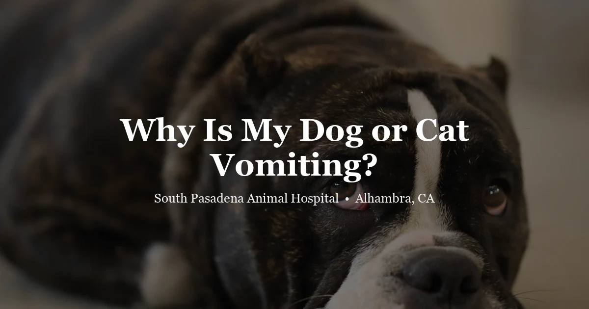

April 17, 2026 · 8 min read
Why Is My Dog or Cat Vomiting? Causes, Warning Signs & When to See a Vet

We field calls about vomiting pets every single day at our Alhambra clinic. Most of the time, the call starts the same way: "She threw up a couple times this morning but seems fine now — should I bring her in?" That question has a real answer, and it depends entirely on what the vomiting looks like and what else the pet is doing.
A dog who ate something he shouldn't have and vomited once, then went back to sleep normally — that's different from a dog who has been vomiting repeatedly for four hours and won't settle. The information below helps you figure out which situation you're in.
Vomiting vs. Regurgitation: Not the Same Thing
This distinction trips people up all the time, and it matters clinically.
Vomiting is active. You'll see heaving, abdominal contractions, often retching sounds. What comes up is partially digested — yellow-green bile, or food mixed with stomach fluid, with an acidic smell. The pet is working to bring it up.
Regurgitation is passive. No warning, no heaving. Food or liquid simply slides back up, often in a tube-shaped blob of undigested kibble. The pet may even turn around and eat it. Regurgitation points to an esophageal problem — megaesophagus, a stricture, a mass — and always needs a vet visit. We've had owners dismiss regurgitation as "just throwing up" for months before getting the diagnosis.
When you call us, describe what you actually saw. Was there active retching? How long after eating? What did the material look like? These details change the triage conversation significantly.
What's Usually Behind the Vomiting
Dietary Indiscretion
Dogs eat things they shouldn't. Garbage, dead things, grass, random stuff off the sidewalk. This is the single most common cause of acute vomiting we see in dogs, and it's usually self-limiting — one or two episodes, then back to normal within 12–24 hours. Cats are pickier but still get caught by sudden diet changes or rich food scraps.
Gastroenteritis
Stomach and intestinal inflammation together. Vomiting and diarrhea, often at the same time. Infections, parasites, or stress can all trigger it. Most cases settle down with supportive care — a bland diet, anti-nausea medication, and sometimes fluids. But if the pet is getting dehydrated or keeps vomiting despite treatment, IV fluids may be needed.
Intestinal Parasites
Giardia, coccidia, roundworms, hookworms — all capable of causing vomiting and diarrhea, especially in young animals or pets with outdoor exposure. A fecal exam rules them out fast. We recommend annual fecals for all pets through our wellness program.
Pancreatitis
Painful, and often underdiagnosed. The pancreas gets inflamed — usually after a fatty meal, which is why we see a spike around Thanksgiving and Christmas. Repeated vomiting, hunched posture, reluctance to eat. Cats develop pancreatitis too, and in cats it often occurs alongside inflammatory bowel disease and liver disease simultaneously — a combination that's harder to manage.
Foreign Body
Socks. Toys. Corn cobs. String. We see all of these. The giveaway is repeated vomiting that doesn't stop — nothing stays down, the pet looks miserable, and often they've stopped eating entirely. This is a surgical emergency. If your dog ate something and won't stop vomiting, don't wait to see if it "passes."
Systemic Disease
Kidney failure, liver disease, hyperthyroidism in cats, Addison's — all can cause vomiting. This is exactly why a pet who has been vomiting repeatedly over days or weeks needs bloodwork, not just repeated doses of anti-nausea medication.
When You Don't Wait — Go Now
Call us immediately or go to an emergency clinic if you see:
- Blood in the vomit — bright red or dark brown coffee-grounds material
- Repeated vomiting that won't stop over several hours
- A bloated, hard, or painful abdomen — especially in large or deep-chested dogs. This is GDV until proven otherwise
- Known or suspected ingestion of a toxin, medication, or foreign object
- Pale or white gums, weakness, or collapse alongside vomiting
- No urination in 12+ hours combined with vomiting
- A puppy or kitten under 12 weeks who vomits more than once — they dehydrate within hours
When you're not sure: call us. (626) 441-1314. We'd rather talk you through a watch-and-wait than have a pet wait too long at home.
Reading the Diarrhea
Diarrhea without vomiting usually points to the lower GI tract. What it looks like gives us clues before you even come in:
- Large volume, watery — often small intestine; watch the hydration closely
- Mucus or fresh red blood — usually colitis, common in stressed or anxious dogs; often responds well to treatment
- Dark, tarry, almost black stool — digested blood from upper GI; needs prompt evaluation
- Pale, greasy, foul-smelling — suggests malabsorption; could be EPI or significant intestinal disease
One episode of loose stool in a healthy pet who's still eating and drinking? Bland diet for a day or two usually sorts it out. Diarrhea beyond 48 hours, or anything with blood or systemic signs — bring them in.
GI Problems in Exotic Pets: A Different Situation Entirely
Rabbits, guinea pigs, and most small rodents physically cannot vomit. No stomach musculature for it. This is critically important — if they eat something toxic, it stays in. GI stasis in rabbits — when gut motility slows or stops — causes bloating, tooth-grinding, and a hunched, miserable animal. It's a life-threatening emergency. A rabbit that hasn't eaten or produced droppings in 6–8 hours needs to be seen today, not tomorrow.
Birds can regurgitate and vomit, and the difference matters. Regurgitation (head bobbing, offering food to a person or object) is normal social behavior. True vomiting — head shaking, material being flung — is a sign of illness. By the time vomiting is visible in a parrot or cockatiel, they're often already significantly sick. These animals hide illness well.
Reptiles that regurgitate repeatedly — bearded dragons, ball pythons, turtles — are usually dealing with temperature problems, respiratory infections, or parasites. Handling too soon after feeding can also cause it. Repeated regurgitation in any reptile warrants a fecal exam and a husbandry review with a vet.
What We Do When You Come In
We'll take a detailed history first — what and when your pet last ate, possible toxin exposures, how many episodes, and what the material actually looked like. Then a physical exam: hydration status, abdominal tenderness, gut sounds. From there, the workup depends on what we find:
- Fecal exam for parasites and pathogens
- Bloodwork to screen for kidney disease, liver disease, pancreatitis, and systemic conditions
- Abdominal X-rays for gas patterns, obstructions, or masses
- Ultrasound for more detailed soft-tissue evaluation when X-rays aren't enough
- Parvovirus snap test for unvaccinated dogs — this one we do fast
Most acute GI cases in healthy adult pets resolve quickly with the right treatment. Getting the diagnosis right the first time prevents the cycle of repeated symptomatic treatment without actually fixing the problem.
Frequently Asked Questions
My dog vomited once but seems fine — should I worry?
Probably not, if they're acting normal, eating, and it doesn't happen again. Withhold food for 4–6 hours, offer water in small amounts, and watch closely. If vomiting returns, the dog seems uncomfortable, or you think they ate something, call us.
What is the difference between vomiting and regurgitation?
Vomiting has active heaving — the pet is working to bring it up, and what comes out is partially digested. Regurgitation is passive — no effort, often tubular undigested food. Regurgitation points to an esophageal problem and always warrants a vet visit.
Can I give my pet Pepto-Bismol at home?
Not for cats — bismuth subsalicylate is toxic to them. For dogs, we'd rather you called us first before giving anything over the counter. A lot of human GI medications are unsafe for pets, and the right treatment depends on the cause.
What does blood in my pet's vomit mean?
Bright red means active upper GI bleeding. Dark coffee-ground material means digested blood — also serious. Either one, especially with weakness or repeated vomiting, needs same-day evaluation. Could be a foreign body, ulcer, or a clotting problem.
My cat has been vomiting every day for a week but is still eating. Is that okay?
No. Daily vomiting for a week is not normal, even if appetite seems okay. Inflammatory bowel disease, hyperthyroidism, and early kidney disease all cause chronic vomiting before other signs appear. This needs bloodwork and a proper workup — book at spah.la/contact.